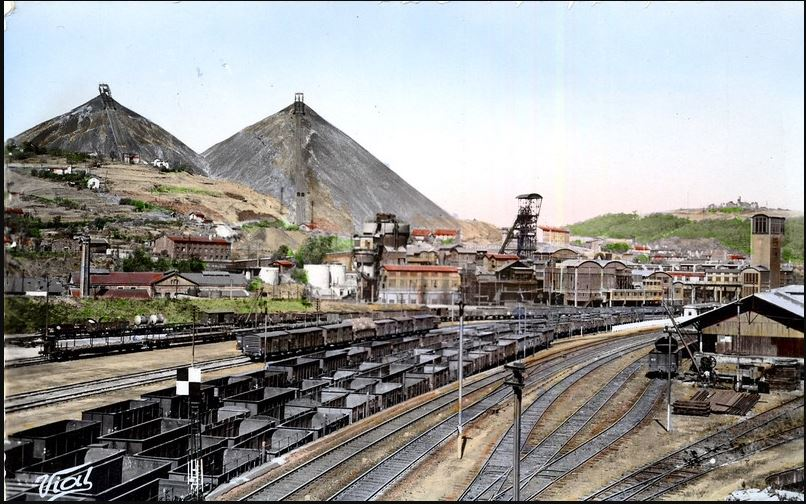

Explora est un établissement de culture scientifique de la Ville de Saint-Étienne, géré par La Rotonde, centre de culture scientifique, technique et industrielle de l’École des Mines.
Et la réponse de la question précédente est :
b) Les deux mamelles
Ces deux crassiers sont classés monuments historiques depuis 2011. Leur accès est strictement limité puisqu’ils restent très instables. De plus, ils continuent de chauffer, au cœur des crassiers, on relève ainsi une température de 800°C.

Une nouvelle question pour la route,
Certains pensent que les limitations de vitesse pour les voitures sont trop strictes. Savez-vous à quelle vitesse roulait la voiture ayant reçu la première amende de l’histoire pour excès de vitesse :
a) 4,9 km/h
b) 12,7 km/h
c) 23,4 km/h
Votre prochaine étape est la seule place où les 3 lignes de tramway de la ville se croisent.
information itinéraire